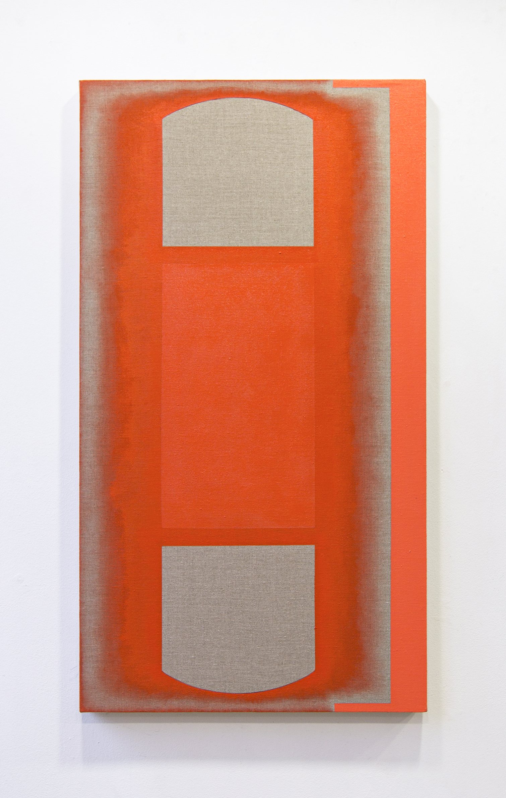

Contemporary British Painting Prize 2022
The exhibition
A group exhibition of seventeen painters, selected by Susan Absolon, Deb Covell, Paul Newman and Casper White for Contemporary British Painting, an artist-led organisation. It then toured to Thames-Side Studios Gallery, London, from 11 to 27 November 2022.
The paintings

180 × 120 cm overall, 6 parts · acrylic on linen
Also shown in the Viva Exhibition (2024).


91 × 51 cm · acrylic on linen

55 × 75 cm · acrylic on linen
Also shown in the Viva Exhibition (2024).